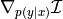

gemclus.gemini.MMDOvA¶
- class gemclus.gemini.MMDOvA(kernel='linear', epsilon=1e-12)[source]¶
Implements the one-vs-all MMD GEMINI which compares the maximum mean discrepancy between a cluster distribution and the data distribution.
where is a kernel defined between the samples of the data space.
- Parameters:
- kernel: {‘additive_chi2’, ‘chi2’, ‘cosine’,’linear’,’poly’,’polynomial’,’rbf’,’laplacian’,’sigmoid’},
default=’linear’ The kernel to use in combination with the MMD objective. It corresponds to one value of KERNEL_PARAMS. Currently, all kernel parameters are the default ones.
- epsilon: float, default=1e-12
The precision for clipping the prediction values in order to avoid numerical instabilities.
- compute_affinity(X, y=None)¶
Compute the kernel between all samples of X.
- Parameters:
- X: ndarray of shape (n_samples, n_features)
The samples between which all affinities must be computed
- y: ndarray of shape (n_samples, n_samples), default=None
Values of the affinity between samples in case of a “precomputed” affinity. Ignored if None and the affinity is not precomputed.
- Returns:
- affinity: ndarray of shape (n_samples, n_samples)
The kernel between all samples if it is needed for the GEMINI computations, None otherwise.
- evaluate(y_pred, affinity, return_grad=False)[source]¶
Compute the GEMINI objective given the predictions and an affinity matrix. The computation must return as well the gradients of the GEMINI w.r.t. the predictions. Depending on the context, the affinity matrix affinity can be either a kernel matrix or a distance matrix resulting from the compute_affinity method.
- Parameters:
- y_pred: ndarray of shape (n_samples, n_clusters)
The conditional distribution (prediction) of clustering assignment per sample.
- affinity: ndarray of shape (n_samples, n_samples)
The affinity matrix resulting from the compute_affinity method. The matrix must be symmetric.
- return_grad: bool, default=False
If True, the method should return the gradient of the GEMINI w.r.t. the predictions .
- Returns:
- gemini: float
The gemini score of the model given the predictions and affinities.
- gradients: ndarray of shape (n_samples, n_clusters)
The derivative w.r.t. the predictions y_pred: 